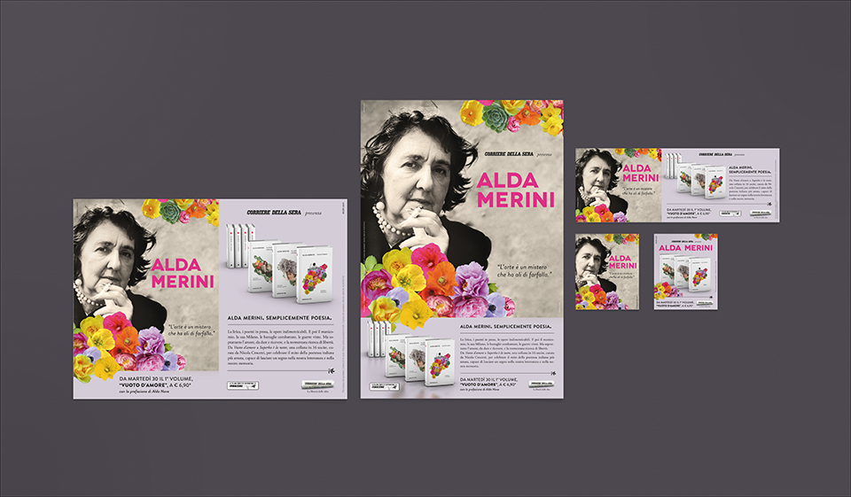
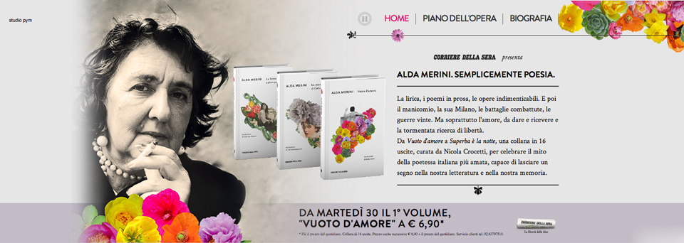
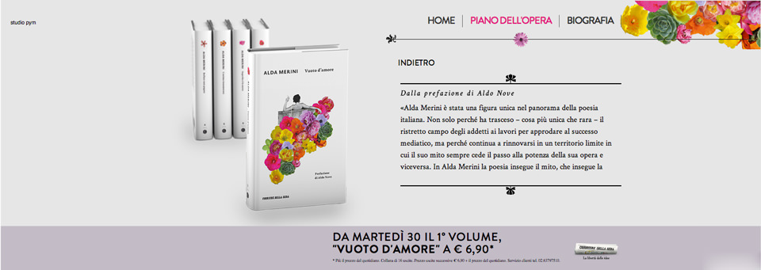
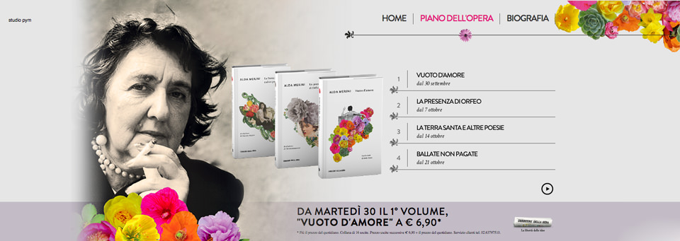
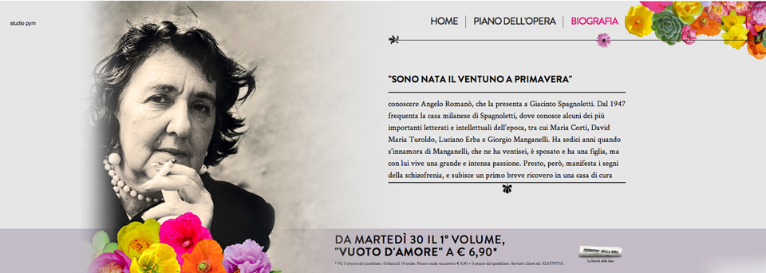

Una panoramica sui formati stampa pubblicati su Corriere della Sera

L'homepage del minisito di Corriere Store

Pagine interne del minisito di Corriere Store

Pagine interne del minisito di Corriere Store

Pagine interne del minisito di Corriere Store
Lo spot radio dedicato alla collana.
Voci: Marina Thovez e Gianluca Iacono.
Voci: Marina Thovez e Gianluca Iacono.
ALDA MERINI. SEMPLICEMENTE POESIA
Da “Vuoto d’amore” a “Superba è la notte”, una collana per celebrare il mito della poetessa italiana più amata.